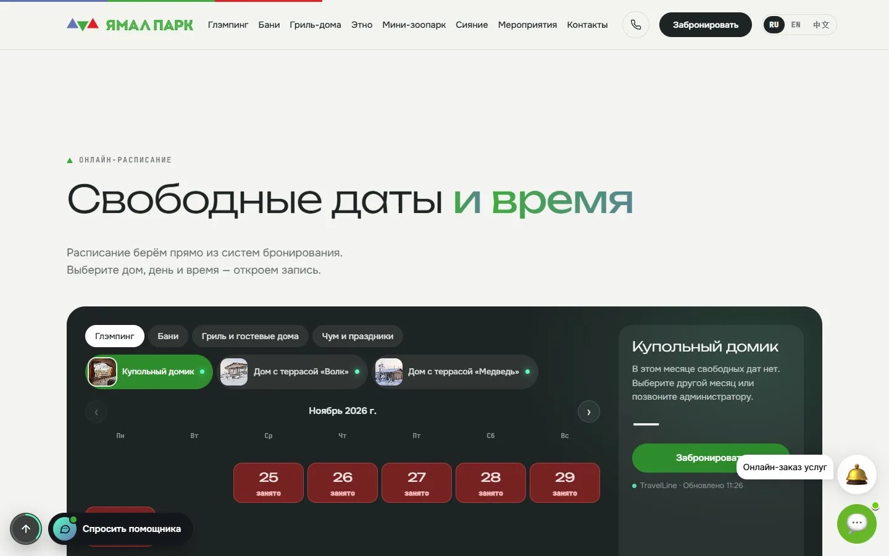
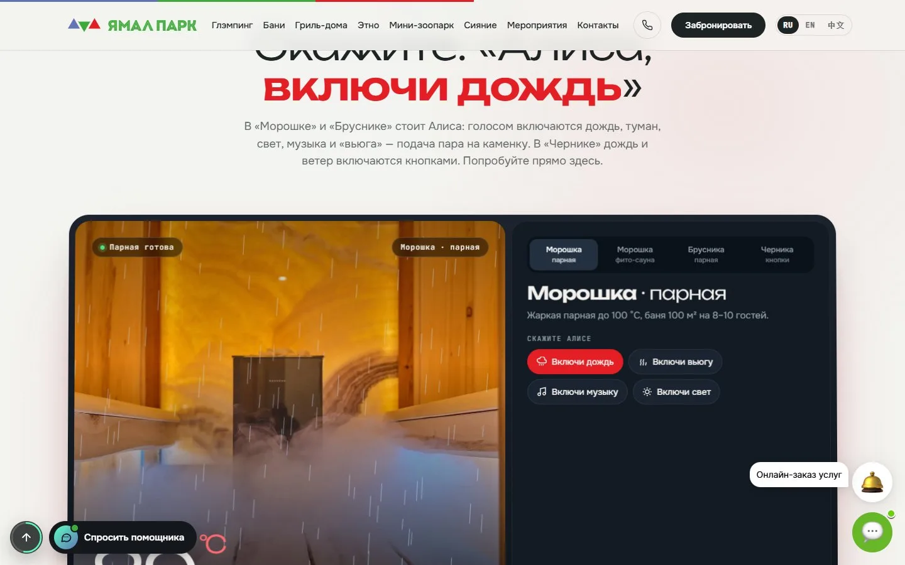
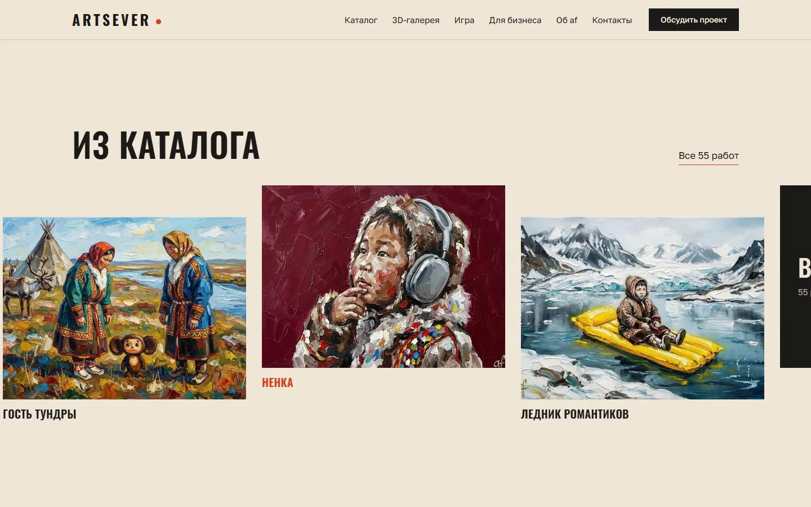
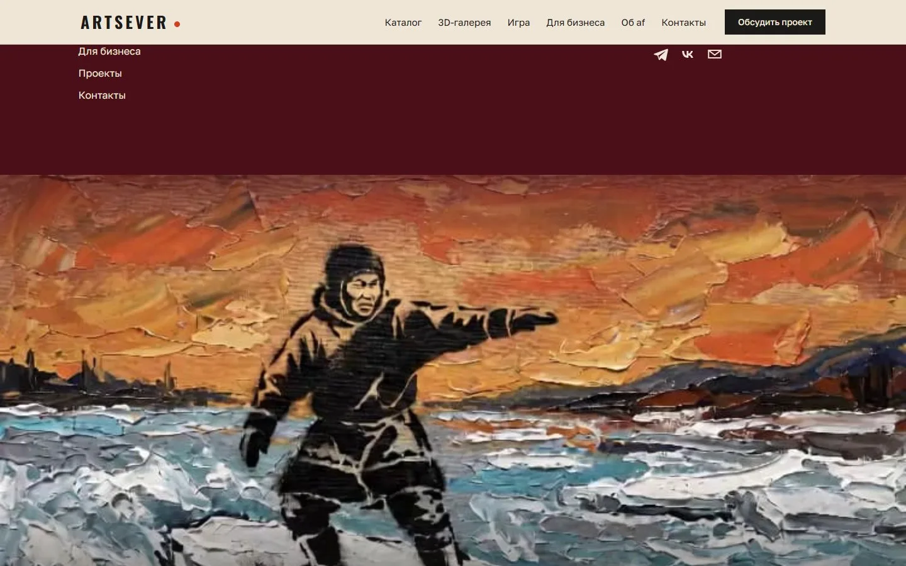
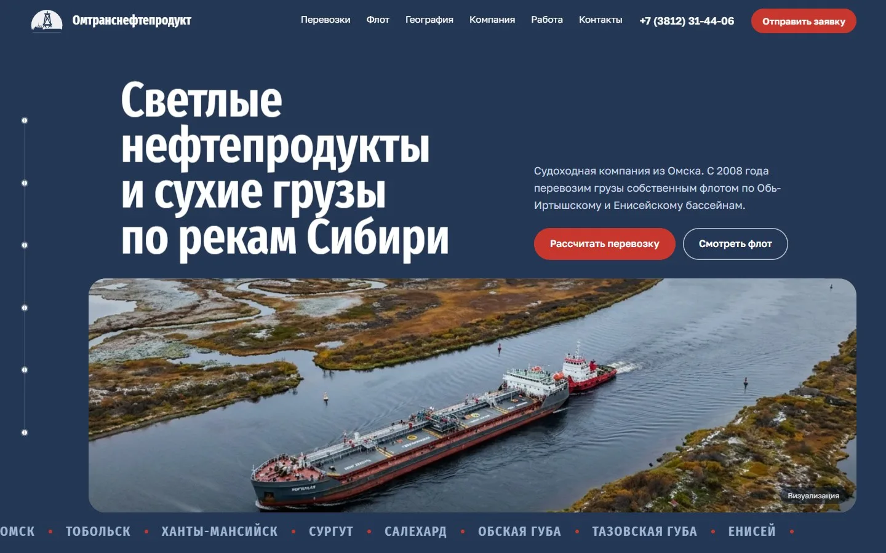
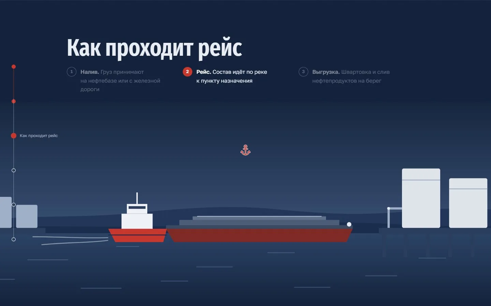
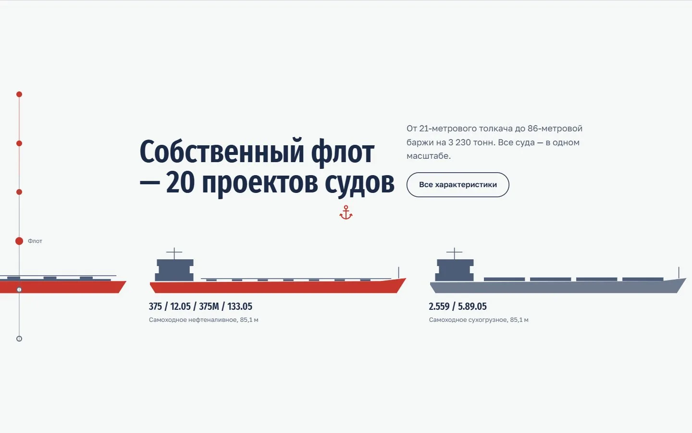
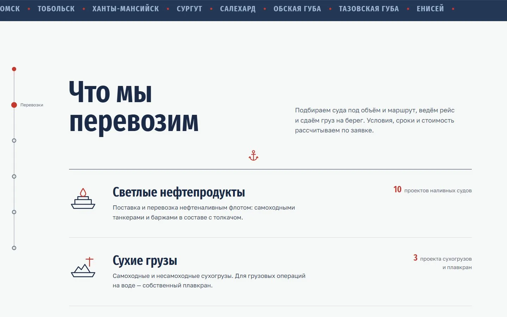
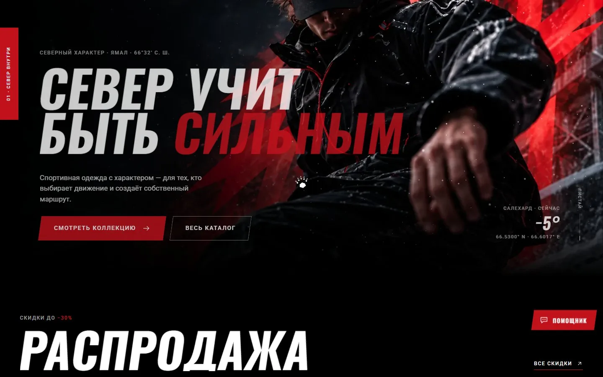

Сайты с северным характером
Проектируем, рисуем и программируем сайты для компаний УрФО. У каждого своя идея, которую запоминают.
Сорок одна концепция для УрФО
Для каждого предприятия собрали живую страницу с его логотипом, текстами и фотографиями. Откройте и пролистайте.
Нефтегаз и геология
9 концепций
Добыча газа, ремонт скважин, оборудование для добычи, геологоразведка
Ремонт скважин
ХМАОСтраница уходит под землю: график ремонтов за 14 лет растёт вниз стволами скважин.Открыть концепциюПогружное оборудование для нефти
Когалым · ХМАОПогружная установка разбирается на узлы прямо на странице, и каждый узел ведёт в каталог.Открыть концепциюРемонт скважин и учебный центр
ХМАОТраектория бокового ствола прорисовывается через страницу и открывает услуги по ходу бурения.Открыть концепциюРемонт скважин и техосмотр
Нижневартовск · ХМАОНочная смена: прожектор посетителя высвечивает узлы установки и работы.Открыть концепциюГеологоразведка и освоение скважин
Новый Уренгой · ЯНАОЯщик с керном: каждый образец достаётся и рассказывает о виде работ.Открыть концепциюРемонт бурового оборудования
Ноябрьск / Новый Уренгой · ЯНАОСоты-гайки направлений докручиваются ключом и раскрываются.Открыть концепциюГидроразрыв пласта
Радужный · ХМАОПосетитель поднимает давление, и в пласте растёт трещина ГРП.Открыть концепциюЗавод нефтегазового оборудования
Тюмень · Тюменская обл.Сайт завода как инженерный лист: каталог по категориям, изделия в разборе из собственных 3D-моделей и запрос КП в один шагОткрыть концепциюСтроительство и дороги
9 концепций
Объекты ТЭК, резервуары и трубопроводы, дорожные работы, фасады и инженерные сети
Строительство объектов ТЭК
Октябрьский район · ХМАОПлощадка строится слоями на глазах: от отсыпки до готового объекта.Открыть концепциюДороги, стройка и флот
Югра · ХМАОЧетыре грани работ: выбранная разворачивается на весь экран со всеми услугами.Открыть концепциюРезервуары и ремонтные муфты
Сургутский район · ХМАОМуфта обжимает трубу на экране, и вместе с ней выезжает паспорт изделия.Открыть концепциюАсфальт и дорожное строительство
ХМАОКаток проходит через экран, и щебень превращается в дорогу.Открыть концепциюСодержание и ремонт дорог
Надым · ЯНАОДорога проходит через всю страницу и приводит к смете.Открыть концепциюДороги и площадки на Севере
Пойковский · ХМАОСайт крупного подрядчика, где объёмный разрез дороги по слоям показывает выполненные объёмы, своё производство и технику и ведёт прямо к запросу на работы.Открыть концепциюДороги и производство материалов
Сургут · ХМАОСайт крупного подрядчика на собственных аэрофото: сцена «От намыва до покрытия» показывает производственную цепочку и из любого звена ведёт в запрос на поставку.Открыть концепциюИнженерные сети
Сургут · ХМАОСайт, на котором за один экран понятно, чем занимается организация: три сети под кварталом, каждую можно выбрать, увидеть связанные работы и отправить заявку именно по нейОткрыть концепциюФасады, свет и инженерия зданий
Сургут · ХМАОСайт-портфолио «объекты в цифрах»: строгая архитектурная типографика, проверенные цифры и все 43 объекта со схемой географии, фильтром и карточкой — что, где и для кого сделаноОткрыть концепциюЭнергетика и газ
8 концепций
Выработка, сети, сбыт электроэнергии и газовое обслуживание
Сбыт электроэнергии
Радужный · ХМАОПровода от опоры тянутся к действиям клиента, и по выбранному бежит импульс.Открыть концепциюПарогазовая электростанция
Ноябрьск · ЯНАОСайт как разрез станции: под крупным заголовком весь цикл ПГЭ, а посетитель сам проходит путь одной подачи газа до электроэнергии и тепла городу.Открыть концепциюМобильные электростанции
Новый Уренгой · ЯНАОПуск мощности в полярной ночи: на тёмную площадку вдали от ЛЭП по этапам приходят установки, газ и линии, и потребители получают свет.Открыть концепциюЭлектричество и тепло города
Сургут · ХМАОСначала диспетчерская и поиск отключения по своему кооперативу или улице, а масштаб сетей показывает «Ночной Сургут» — условная схема города, который загорается по мере прокрутки.Открыть концепциюЭлектрические сети
Ханты-Мансийск · ХМАОЗаявитель видит свой маршрут присоединения: кто он, какую форму подать, как придёт договор и чей сейчас ход.Открыть концепциюСвет, тепло и вода
Салехард · ЯНАОДом в разрезе: житель выбирает свет, тепло, воду или канализацию и сразу получает телефон при проблеме, способ подключения и оплаты и действующий тариф.Открыть концепциюГазификация и газовое обслуживание
Салехард · ЯНАОСначала аварийный телефон и дела абонента, затем «Путь газа»: по прокрутке газопровод прокладывается от действующей сети до дома, и в конце загорается горелкаОткрыть концепциюГазовая служба
Новый Уренгой · ЯНАОГазовая служба как спокойный дом: аварийный номер всегда под рукой, а на любую ситуацию — пошаговая подсказка с нужным телефоном и документомОткрыть концепциюЖКУ для жителей
2 концепции
Управление домами и расчёты за коммунальные услуги
Расчётный центр
ЯНАО«Одна квитанция за всё»: быстрые действия жителя на первом экране, календарь месяца с окнами показаний и оплаты, интерактивный разбор квитанции по строкам с ответом «куда обращаться» и поиск офиса по городам ЯмалаОткрыть концепциюУправление домами
Новый Уренгой · ЯНАО«Мой дом»: житель находит свой адрес на первом экране и сразу видит паспорт дома, куда звонить и за что в доме отвечает управляющая компания.Открыть концепциюАвиация
4 концепции
Аэропорты и вертолётные перевозки
Аэропорт
Надым · ЯНАОГлиссада: огни полосы ведут пассажира по шагам до посадки.Открыть концепциюДва аэропорта в Арктике
Сабетта · ЯНАОПаспорт аэродрома: прокрутка чертит условную схему, а «по шагам» показывает, что аэропорт делает для вашей роли и к кому обратитьсяОткрыть концепциюВертолётные перевозки
ЯНАОВертолёт летит по карте Ямала к выбранному посёлку, рядом рейсы и тариф.Открыть концепциюВертолётная авиакомпания
Нижневартовск · ХМАОЗаказчик выбирает задачу для вертолёта и сразу видит фото, цифры авиакомпании, нужный телефон и заявку на эту работу.Открыть концепциюТранспорт и порт
5 концепций
Речные и железнодорожные перевозки, порт и спецтранспорт
Речной порт
Салехард · ЯНАОПортальный кран грузит баржу: посетитель выбирает груз и собирает заявку.Открыть концепциюРечные перевозки
Югра · ХМАОПо рекам Югры: человек начинает со своей задачи, а все маршруты и паром видит на одной схеме рек, по которой идёт теплоходОткрыть концепциюНерудные материалы и логистика
Екатеринбург · ЯНАО / Свердловская обл.От карьера до объекта на одной схеме: заказчик выбирает груз и сезон, видит, как тот пойдёт по реке или по зимнику, и сразу отправляет заявку на такую перевозкуОткрыть концепциюГрузы по железной дороге
Новый Уренгой · ЯНАОПервый экран сразу считает перевозку на накладной, а дальше этот же груз идёт по станциям: что делает компания и что нужно от клиентаОткрыть концепциюСпецтехника и перевозки
Новый Уренгой · ЯНАОКолонна машин едет по зимнику, фильтр выстраивает нужные под задачу.Открыть концепциюПитание и рыбоводство
2 концепции
Вахтовое питание, хлеб и разведение рыбы
Питание вахты и хлеб
Тарко-Сале · ЯНАОКруглый стол-циферблат: сутки вахты с настоящими фото кухни и хлеба.Открыть концепциюРыбоводный завод
Ханты-Мансийск · ХМАО«От поверхности в глубину»: сайт погружает под воду и показывает год жизни рыбы на заводе, из каждого этапа ведёт к нужной услугеОткрыть концепциюНаука и лаборатории
2 концепции
Исследования для нефтегаза и экспедиции в Арктике
Исследования и лаборатории
Когалым · ХМАООт пробы к протоколу: заказчик выбирает объект и сразу видит, что по нему исследуют, какие лаборатории и аттестаты подходят по профилю, и отправляет готовый перечень на расчёт стоимостиОткрыть концепциюАрктические экспедиции
Салехард · ЯНАОСайт научно-организационного центра: интерактивная карта экспедиций и стационаров Ямала с фото и годами работ вместо ленты чужих баннеровОткрыть концепциюВыполненная работа
Ямал Парк
Загородный отель у Салехарда
Глэмпинг, бани и северное сияние на одном экране. Сайт остался на Tilda, но выглядит как собственная разработка. Русская, английская и китайская версии.
Открыть сайтyamalpark.ru




Выполненная работа
ARTSEVER
Магазин картин о Севере
Сайт устроен как выставка: у каждого раздела свой цвет, кисть проявляет картину на холсте, по 3D-галерее можно ходить.
Открыть сайтartsever.shop




Выполненная работа
Омтранснефтепродукт
Судоходная компания из Омска
Речные перевозки нефтепродуктов и сухих грузов. Страница каждого судна с чертежом по реальным размерам, 3D-карта рек.
Открыть сайттестовая версия




Выполненная работа
Северный характер
Наш магазин одежды
Свой бренд, на котором мы проверяем идеи. Магазин на InSales с живыми остатками, лукбуком и играми.
Открыть сайтсеверныймерч.рф


Выполненная работа
Мой ассистент
Сервис для предпринимателей
Задачи, документы и деньги в одном кабинете, боты в MAX и Telegram. Главную облегчили с 7 МБ до 0,5.
Открыть сайтпомощник.site


Выполненная работа
Ямалгосснаб
Оператор северного завоза
Снег собирается в логотип, завоз топлива идёт по Оби вместе с прокруткой, карта и калькулятор резидента считают сами.
Открыть сайттестовая версия


Запуск до 30 декабря
Декабрь 2026 года по дням. Каждый след — день работы над вашим сайтом, если договор подписан до 4 декабря.
пнвтсрчтптсбвс12345678910111213141516171819202122232425262728293031
Сайт под ключ
500 000 ₽
с НДС 5 %, в том числе НДС 23 809,52 ₽
Акция: цена действует до конца 2026 года
- Идеясвоя и дизайн под компанию
- Все страницыглавная, внутренние страницы, формы
- Телефонудобно и быстро, настройка под Яндекс
- 3 месяцаподдержки после запуска
- 1 годхостинг в РФ, SSL и домен
- 152‑ФЗполитика, согласия, cookie
- МетрикаЯндекс Метрика, Вебмастер и Бизнес
Расскажите о компании
Посмотрим ваш сайт, найдём слабые места и покажем идею.